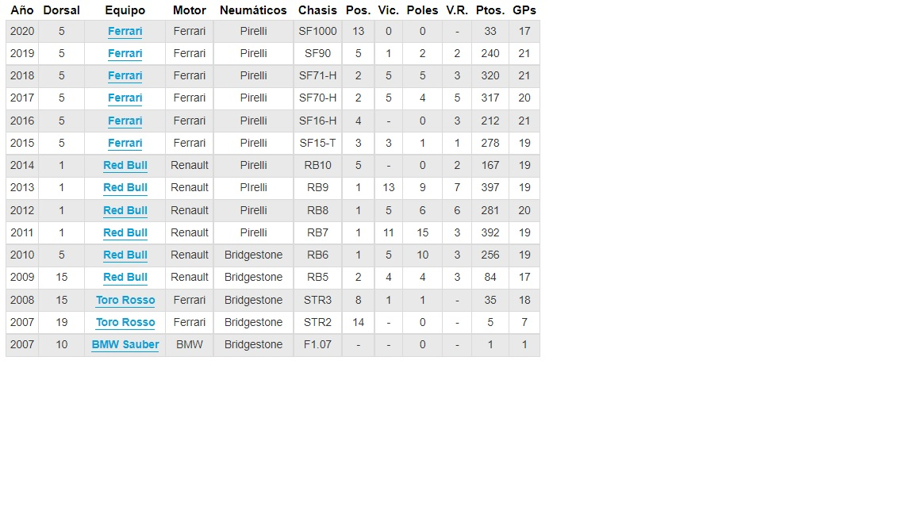

Sebastian Vettel
Inicio Norris Hamilton Verstappen Leclerc
Todo sobre Sebastian Vettel - Piloto de F1
Nacionalidad: Alemania
Numero: 5
Equipo actual: Aston Martin
Compañero: Lance Stroll (2021)
Grand prix disputados: 267
Titulos ganados: 4 (2010 - 2011 - 2012 - 2013) Equipo Red Bull
Victorias: 53
Poles: 57
Podios: 122
Vueltas rapidas: 38
Puntos a lo largo de su carrera: 3048

Sebastian Vettel, nacido el 3 de julio de 1987 en el pequeño pueblo montañoso de Heppenheim (Hesse, Alemania), sale de una humilde provincia alemana gracias a su buen manejo en el karting. Con la ayuda de su padre, Norbert Vettel, Sebastian prosigue su camino en el automovilismo hasta alcanzar el estrellato internacional en una proyección envidiable.
El piloto alemán destaca en sus primeros pasos en monoplazas, obteniendo el título de la Formula BMW ADAC en 2004, lo que le impulsa a plantar cara a pilotos de gran renombre como Lewis Hamilton en la Formula 3 Euroseries, siendo subcampeón del certámen en 2006 por detrás de Paul di Resta.
Aquel año compagina la F3 Euroseries con la Formula Renault 3.5. En dicho campeonato, Vettel sufre un grave accidente en Spa-Francorchamps: un neumático corta su dedo índice, lo que podría haber comprometido su carrera como piloto profesional. Tras varias cirugías, Vettel recupera su dedo y desde entonces cada victoria la celebra mostrando su dedo índice como muestra de superación.
La academia de jóvenes pilotos de Red Bull captó rápidamente a la joven promesa alemana, el llamado a ser el nuevo Schumacher. En 2007, el equipo de F1, BMW Sauber. le pide que sustituya al maltrecho Robert Kubica tras su fortísimo accidente en Canadá. Vettel se convierte en aquel Gran Premio de EE.UU., en Indianápolis, en el piloto más joven hasta la fecha en puntuar en F1 (19 años y 349 días). Ese mismo año, Toro Rosso confirma que Vettel concluirá la temporada en sustitución de Scott Speed.
Vettel continúa rompiendo récords de precocidad en las siguientes temporadas: en el GP de Italia de 2008 se convierte en el ganador más joven de la historia por aquel entonces (actualmente el récord lo ostenta Max Verstappen) y en Abu Dabi se proclama el campeón del mundo más joven de todos los tiempos, superando a Fernando Alonso.
Cuatro títulos mundiales con Red Bull, más de un lustro de alegrías y decepciones en Ferrari junto a Kimi Räikkönen y Charles Leclerc, y una nueva etapa (y posiblemente la última en F1) con Aston Martin y Lance Stroll como compañero de filas.
2007 (BMW Sauber; 14º, 6 puntos)
Sebastian Vettel debutó en Fórmula 1 como piloto oficial del equipo BMW Sauber en el GP de Estados Unidos. El alemán, sustituto de Robert Kubica tras el accidente del polaco durante, el GP de Canadá, sumó un punto en su carrera de estreno. A partir de la cita de Hungría, Vettel se enroló en el equipo Toro Rosso, al que dio cinco puntos más tras acabar en una espectacular cuarta plaza en el GP de China.
2008 (Scuderia Toro Rosso; 8º, 35 puntos)
Acabó la temporada en octava posición del Campeonato, y demostró que la lluvia es un elemento que le gusta y en el que es capaz de sacar mucho partido a un monoplaza. Vettel disfruto de un fin de semana histórico: Monza, en septiembre. Allí se hizo con su primera pole, que transformó 24 horas después en su primera victoria. Allí cayeron los récords de Fernando Alonso como piloto más joven en lograr ambas hazañas.
Las cuatro primeras carreras del año, en las que debió abandonar, mayoritariamente por accidentes en la primera vuelta. La mala suerte fue su compañera de viaje en el tramo inicial de la temporada, y los toques y roturas de motor le impidieron demostrar su valía como talento de presente y futuro para la categoría reina.
Su mala racha se rompió al fin en Mónaco, donde Sebastian logró un estupendo quinto puesto bajo la lluvia tras protagonizar una progresión espectacular desde la penúltima plaza. En Canadá consiguió un punto más tras salir desde la línea de boxes, manteniendo a raya a Kovalainen y presionando a Barrichello durante la carrera.
En la clasificación del Gran Premio de Gran Bretaña rompió también su mal agüero en clasificación, colocándose por primera vez entre los ocho primeros, resultado que no pudo luego rubricar en carrera tras un toque con David Coulthard en la curva Bridge.
En Alemania volvió a arañar otro punto tras salir noveno y, tras un GP de Hungría para olvidar, en Valencia volvió a sorprender a toda la parrilla firmando la sexta casilla de salida, posición que repitió al día siguiente en carrera.
En Spa-Francorchamps, donde termina quinto por detrás de Alonso. Fue el mejor preludio para su primera victoria en Fórmula 1, que llegó nada menos que Monza. Un día antes se convirtió en el poleman más joven de la historia, dato redondeado con el récord del circuito incluido. Y en carrera, bingo. Vettel lideró la carrera con contundencia y bajo un copioso aguacero arrinconó a Fernando Alonso una vez más de la estadística de vencedores precoces. Había nacido una nueva estrella.
Vettel siguió sumando puntos en Singapur y Japón, y rozó el podio en Brasil tras rebasar a Lewis Hamilton, que se jugaba el título mundial, a pocas vueltas del final. Su confirmación como piloto Red Bull para 2009 avanzaba el alumbramiento de un futuro campeón mundial.
2009 (Red Bull; 2º, 84 puntos)
Sebastian fue promocionado desde Toro Rosso a Red Bull en 2009. Pese a sus errores en Australia y Malasia, las dos primeras citas de la temporada, el piloto germano se anotó cuatro victorias en Canadá, Silverstone, Japóm y Abu Dhabi, y mantuo viva la llama del cameonato hasta su penúltima carrera, disputada en Interlagos. Al final, Vettel debió conformarse con la segunda plaza del mundial tras el Brawn GP de Jenson Button. Con todo, la experiencia de su pelea por el título le preparó para el gran asalto del año siguiente.
2010 (Red Bull; campeón, 256 puntos)
Todas las miradas le apuntaban como máximo rival del Ferrari de Fernando Alonso y de los McLaren. Su primera victoria de la temporada vino en el Gran Premio de Malasia, tercera prueba del año, aunque no volvería a ganar hasta casi tres meses después, en el GP de Europa. Su inicio de temporada fue un tanto irregular, marcado por varias averías y alguna que otra polémica con su compañero de equipo, Mark Webber, como su colisión en Turquía que dejó fuera de combate al alemán. Sin embargo, mediada la temporada, Sebastian empezó a encadenar buenos resultados, acabando en los puntos todas las carreras salvo el GP de Bélgica y el de Corea, y logrando la victoria en tres de las cuatro ultimas carreras. Esta buena racha, unida al error estratégico de Ferrari con Fernando Alonso en el GP de Abu Dhabi, le convirtió en el más joven campeón mundial de todos los tiempos. Vettel, que no había liderado antes la provisional, aventajó en cuatro puntos a Fernando Alonso y en catorce a Webber.
2011 (Red Bull; campeón, 392 puntos)
Ayudado por el RB7, el mejor coche de la temporada y uno de los estadísticamente más exitosos de todos los tiempos, el alemán, a sus 23 años, se convirtió en el bicampeón más joven de la historia, superando en casi dos años al mismísimo Fernando Alonso. Lo logró en la 15ª carrera puntuable, en Suzuka, tres carreras antes de la conclusión del campeonato.
Tan apabullante dominio queda reflejado en el resumen estadístico de 2011, que el teutón cierra con un casillero impresionante: 11 victorias, 15 pole positions, 17 podios, 3 vueltas rápidas, 392 puntos y 739 vueltas en primera posición, equivalentes a 3.795 km. Nota importante: el segundo clasificado esta última estadística es Lewis Hamilton, con apenas 150 giros al frente del pelotón y 766 km. La temporada triunfal de Vettel apenas muestra dos borrones: su actuación en el Gran Premio de casa, celebrado en Nürburgring, donde un trompo tras pisar la raya blanca acabó costándole el podio, y el abandono en Abu Dhabi al pinchar un neumático pocos metros después de la salida.
2012 (Red Bull; campeón, 281 puntos)
Si en 2010 se coronó el campeón más joven de la historia de la Fórmula 1 y en 2011 se proclamó el más joven bicampeón, la temporada 2012 vio como Sebastian Vettel ingresaba en los libros de historia al convertirse en el piloto más joven en lograr tres títulos mundiales consecutivos. Hasta el momento, solo Michael Schumacher y Juan Manuel Fangio habían ganado tres coronas de forma consecutiva.
Sin embargo, el germano no brilló a principios de temporada como si lo había hecho un año anterior y tuvo que esperar hasta el Gran Premio de Bahréin, cuarta prueba del calendario, para lograr su primera Pole Position y victoria de 2012. Pese a su ‘tardanza’ en subir a lo más alto del podio, el de Red Bull fue el piloto más asiduo al primer cajón, en un total de cinco ocasiones.
EL RB8 no fue tan competitivo como en 2011 y en las siete primeras carreras, siete fueron los pilotos diferentes en ganar un Gran Premio. Situación que reflejaba la igualdad entre monoplazas y escuderías. No obstante, después del parón veraniego, el coche creado por Adrian Newey y pilotado por Vettel logró cuatro victorias consecutivas.
La rotura del alternador del motor Renault en Valencia y Monza preocuparon al alemán respecto a sus opciones de luchar por el Título. Pero la fortuna también le sonrió; tras el abandono de Fernando Alonso en Japón y la victoria del germano en Suzuka y Corea le dejaron al frente de la Clasificación. Liderato que vio peligrar en Abu Dhabi cuando después de la calificación, el RB8 solo tenía 850 mililitros de gasolina en su depósito. Tal contratiempo le llevó a salir el último aunque Red Bull decidió arrancar la carrera desde el pitlane para cambiar reglajes del monoplaza, situación que favoreció su remontada ya que cruzó la recta de meta en la tercera plaza.
En Estados Unidos, Red Bull celebró el Mundial de Constructores, festejo que una semana más tarde continuarían con la consecución del tricampeonato de Vettel en una temporada que, pese a no mostrar un ritmo tan competitivo y dominador como en 2011, el monoplaza de Adrian Newey y el pilotaje del alemán volvieron a lo más alto.
2013 (Red Bull; campeón, 397 puntos)
Sebastian Vettel portó por tercer año consecutivo el número uno en el morro de su RB9 y, una vez más, todas las miradas estaban puestas en él y en su equipo, Red Bull. La temporada no pudo comenzar de mejor forma consiguiendo la Pole en Melbourne pero, la extraña falta de ritmo del monoplaza austríaco a consecuencia de unos Pirelli que no se adaptaron del todo al monoplaza, le relegaron al tercer puesto en la carrera inaugural de 2013.
El alemán tuvo que esperar a la siguiente carrera, Malasia, para lograr su primera victoria del año con polémica de por medio tras hacer caso omiso a las órdenes de su equipo para que se mantuviese por detrás de Mark Webber, que iba camino de la victoria y así asegurar el doblete. Sin embargo, Vettel hizo gala de su innato gen ganador y superó al australiano para llevarse los 25 puntos en Sepang.
Repetiría victoria en Canadá y Alemania con podios en Mónaco y Hungría antes del parón veraniego, punto de inflexión en el campeonato. Con Mercedes y Ferrari acechando a un equipo Red Bull titubeante a consecuencia de los neumáticos, Sebastian Vettel veía peligrar su reinado.
Pero los cambios necesarios en las gomas Pirelli para preservar la seguridad de los pilotos hizo que el regreso a la construcción de 2012 le viniese como anillo al dedo al RB9, que dominó de la mano de Vettel en las nueve carreras que conformaron la segunda parte del campeonato.
El alemán rompió el récord de victorias consecutivas de Alberto Ascari dejándolo en nueve, por el momento, e igualó las 13 victorias en una misma temporada de Michael Schumacher. Con estos números, sumados a sus 9 poles y 7 vueltas rápidas, Vettel volvió a proclamarse campeón del mundo tras ganar el Gran Premio de la India y no dejó de pisar el acelerador hasta Brasil, para finalizar el campeonato con 155 puntos de ventaja sobre Fernando Alonso, subcampeón.
2014 (Red Bull, 5º, 167 puntos)
El piloto que llevó el número uno en el morro de su RB10 no supo, sin embargo, mantenerlo. La temporada ya comenzó con estragos, las nuevas reglas hacían mella y casi no se vio rodar a Red Bull durante los entrenamientos de pretemporada por los problemas que tardó en solventar Renault y que estaban relegando a varias escuderías justo en los pasos iniciales del año. Melbourne sólo pudo disfrutar tres vueltas del alemán antes de contemplar su decepcionante abandono por problemas de software en su monoplaza.
Con las graves carencias del grupo propulsor francés y la superioridad que empezaba a trazar Mercedes, visible a partir de Bahréin, la cosa se ponía cuesta arriba para el campeón del año anterior. La debilidad de las armas de los de Horner se podía ver tanto en rectas como en curvas. Sin embargo, Barcelona y Malasia volvieron a acercar al tetracampeón al podio con un cuarto y un tercer puesto respectivamente.
Mientras que Canadá, GP en el que sólo 14 pilotos cruzaron la meta, supuso otra oportunidad de ascenso para Red Bull, en Mónaco la situación se torció por problemas en el turbo de Seb y un problema eléctrico en la unidad de potencia determinó el fin a la carrera de Vettel en Spielberg. La diferencia con respecto a los Mercedes en esta primera parte del año y hasta con respecto a su compañero, al que tuvo que ver coronándose primero en Montecarlo, era más que visible.
Siempre permanecerá en nuestra memoria el polémico intercambio dialéctico que compartieron el germano y Fernando Alonso en Silverstone. Ambos acusaban al otro de rebasar los límites de la pista, algo que no gustó en absoluto a Niki Lauda, que calificó de "gritos de niño pequeño asustado" las frases de Sebastian por radio en aquella carrera.
En Alemania ya comenzaban a vislumbrarse otros nuevos enemigos en pista, los Williams, que terminaron finalmente terceros en el Mundial de Constructores, 85 puntos por detrás de Red Bull. No era sólo eso, Sebastian tenía al diablo en casa y en Hungría pudo contemplar desde la séptima posición como su compañero, Daniel Ricciardo, volvía a ganar una carrera.
Singapur supuso quizás su recuperación, ya que la brillante gestión de neumáticos que realizó durante toda esta prueba le colocó en el segundo peldaño del podio de Marina Bay, en la primera vez que los de Horner unían sus fuerzas para acabar sumando más puntos en un domingo que Mercedes. En Japón, el alemán no lo hizo nada mal, acabando tercero, pero no fue suficiente ya que a la siguiente cita, en Rusia, Red Bull se despedía matemáticamente de ser los mejores fabricantes de este año. La de EE.UU. se puede calificar como su mejor remontada, saliendo desde el pitlane, cruzó la meta en séptimo lugar. Además, sus puntos de Brasil fueron los responsables de que los de Horner le quitaran el subcampeonato a Williams.
Pero claro, el año no podía terminar sin algo de polémica y los dos RB10 tuvieron que partir desde boxes, el domingo de Abu Dhabi, al encontrar la FIA demasiada flexibilidad en sus alerones delanteros, aspecto que iba en contra de las reglas. Cuando el monoplaza pisó el emotivo “Danke Seb” que se podía leer en el suelo del garaje, al regresar con un octavo puesto de la cita en Yas Marina, Vettel sabía que sus seis años con Red Bull habían concluido, después de atravesar el primer año en el que un compañero de equipo le supera en resultados.
El 20 de noviembre se anunciaba que Sebastian Vettel pilotaría en Ferrari en 2015 junto a Kimi Raikkonen. Se conoció el mismo día en el que se confirmó que Fernando Alonso abandonaría la Scudería. Tras un año en el que falló la adaptación del alemán a su nuevo monoplaza y en el que algunas críticas apuntaban que el tetracampeón "se había olvidado de pilotar sin el mejor coche", el número 1 de la parrilla, pese a los continuos cambios de chasis que ejercieron desde Red Bull, necesitaba cambiar de aires.
Pese a la noticia del movimiento de pilotos, Red Bull le mantuvo con ellos incluso en los test post-GP de Abu Dhabi, en los que no le dejó probar con Ferrari. No obstante, el alemán no dudo en 'jugar' con la legalidad visitando el box de la Scuderia durante estos días de pruebas para conocer a sus nuevos compañeros. No fue hasta el 29 de noviembre, sin embargo, cuando el alemán tuvo la suerte de subirse al F2012 en Fiorano, ya de rojo, en una experiencia que él mismo describió como un “cuento de hadas” y en la que completó cerca de un centenar de vueltas.
2015 (Ferrari, 3º, 278 puntos)
Tras una brillante etapa en Red Bull, en la que consigue cuatro campeonatos del mundo de pilotos, Sebastian Vettel llega a las filas de Ferrari para reemplazar a Fernando Alonso. El alemán tiene que asumir un reto complicado, para poder volver a luchar por objetivos importantes, después de una mediocre temporada de los de Maranello.
Los test de pretemporada dejan buenas sensaciones en Ferrari y buen reflejo de ello es el podio obtenido por Sebastian en la cita inaugural en Australia. Ya en clasificación puede meterse en cuarta posición, para demostrar que el SF15-T evoluciona notablemente en comparación con su predecesor. En Malasia llega su primera victoria con el equipo rojo, después de romper la primera línea de Mercedes durante la clasificación del sábado; algo que no sucede desde hace nueve GPs. En Bahréin no puede ser más que quinto.
En China y en España suma otros dos terceros puestos, mientras que en Mónaco se queda a las puertas de la victoria, después de que le supere Nico Rosberg, tras un error estratégico de Lewis Hamilton. La temporada arranca bien para Ferrari y poco a poco, se postulan como una 'alternativa' a Mercedes, aunque realmente no ponen en jaque en demasiadas ocasiones a los alemanes.
Sebastian acumula un nuevo podio en Gran Bretaña y en Hungría, consigue su segunda victoria del año y la primera en este circuito, después de un fin de semana muy consistente y en el que los Mercedes presentan más problemas de los habituales.
Llegados al ecuador de la temporada, el cuatro veces campeón del mundo es claramente el líder del equipo italiano, sólo le supera Kimi Raikkonen en dos de las diez carreras disputadas hasta el momento. Tras el parón veraniego, en Bélgica, Vettel abandona a falta de una vuelta, tras el reventón de uno de sus neumáticos en el momento en que pelea por la tercera posición, aunque unos días después, regala un segundo puesto a todos los tiffosi en Italia.
Se queda a las puertas de una de las victorias que más ansían los pilotos de la parrilla, sobre todo si pilotas para Ferrari, pero su trabajo se ve recompensado en Singapur, prueba en la que logra su tercer y último triunfo del año. Una vez más, Mercedes se muestra débil y el alemán aprovecha hábilmente la circunstancia.
Así, encadena cinco podios consecutivos, con la posterior tercera posición en Japón y la segunda de Rusia. En México, sin embargo, se ve la faceta más nerviosa del alemán. Su carrera está marcada por los errores y finalmente acaba contra el muro. Posiblemente, el único fallo grave que se ve en Sebastian en todo el año.
En Brasil regresa a las posiciones de privilegio con un tercer puesto, mientras que en la prueba de clausura, en Abu Dhabi, se queda a la puertas, después de que le superara su compañero de equipo. En definitiva, el piloto de Heppenheim cumple con creces lo que se esperaba de su primera temporada en Ferrari, tras el mal año de los italianos en 2014.
Tres victorias en un año completamente dominado por Mercedes, siendo un habitual del podio, en hasta 13 ocasiones termina entres los tres primeros y suma un total de 278 puntos. De hecho, llega a pelearle la segunda posición del Campeonato a Nico Rosberg, logro que se ve frustrado finalmente por el resurgir del de Mercedes a final de año.
2016 (Ferrari; 4º, 212 puntos)
La temporada 2016 comenzó de forma agridulce para Sebastian Vettel. El piloto de Ferrari entendió rápidamente que no iba a ser posible luchar con los Mercedes, sin embargo, consiguió un satisfactorio tercer puesto en Australia, que ayudaba a ser positivo. Positivismo que se esfumó de inmediato en la siguiente carrera, en Bahréin, cuando el Ferrari rompió en la vuelta de formación y por primera vez en su carrera en Fórmula 1, Vettel se perdía la salida de un Gran Premio.
Y a pesar del positivo resultado en China con un segundo puesto, una accidentada salida en Sochi provocó un nuevo abandono para el alemán, que se resarcía en España con un tercer puesto. Una temporada que empezó con podio o nada para Vettel, hasta llegar a Mónaco, donde el de Ferrari no pudo pasar del cuarto puesto. Le siguieron dos segundos puestos en Canadá y Bakú, aprovechando la inconsistencia de los Mercedes.
No pudo repetir el alemán actuación cerca de casa, en Austria, tras sufrir un aparatoso accidente en recta de meta provocado por el reventón de uno de sus neumáticos, aparente consecuencia de un fallo de frenos que sobrecalentó la zona. Y en Austria, pese a los abandonos, acabó la parte positiva de la temporada para Ferrari y Vettel, que hasta la fecha habían sido la oposición a Mercedes.
Y es que el Ferrari perdió competitividad frente a los Mercedes y sobre todo, ante los Red Bull, que comenzaron a acabar por delante con frecuencia. Así pues, Vettel solo volvería a subir al podio en Monza y en Abu Dhabi, a final de año, sumando un nuevo abandono en Malasia.
La consistencia que caracteriza al alemán le permitió sumar un gran número de puntos, un total de 212, lo que no evitó que acabase el año por detrás de Daniel Ricciardo con 256 puntos, pero sí por delante de Max Verstappen, con 204 puntos. Vettel se hacía con el cuarto puesto en la clasificación general, sin lograr ninguna victoria en todo el año, algo que sí logró en la temporada anterior y que podría ser catalogado como un paso atrás.
2017 (Ferrari; 2º, 317 puntos)
El cambio de normativa, con mayor importancia aerodinámica, daba pie a Vettel a ser positivo de cara a la temporada 2017 a pesar de la poca previsión de cambios en la parte de la unidad de potencia, en la que Mercedes seguía contando con ventaja.
Y ciertamente, el año no pudo comenzar de mejor manera con una victoria en la cita inaugural en Australia, al que siguió un segundo puesto en China y una nueva victoria en Bahréin para ratificar que lo de Australia no fue casualidad y que el Ferrari tenía material para competir, siendo su fuerte la gestión y un mejor trato a los neumáticos. Vettel continuó con resultados positivos con dos segundos puestos en Rusia y España, amén de la victoria en Mónaco, que le dejaba en una posición muy ventajosa en la clasificación general frente a un Lewis Hamilton que no estaba siendo todo lo regular que cabría esperar.
Vettel no pudo mantener la racha triunfal de victorias y segundos puestos en Canadá y Bakú, donde sumó dos cuartos puestos. Azerbaiyán supuso quizás un punto de inflexión para el piloto alemán, sometido a mucha presión y que en carrera llegó a golpear a Hamilton recriminándole una acción. Una situación en la que no pocos pidieron bandera negra y sanción ejemplar para el piloto, pero en la que la FIA prefería mirar a otro lado, debido a la vibrante lucha que estaban manteniendo el de Ferrari y el de Mercedes. La situación se resolvió con una carta de disculpa y una sanción paupérrima sin repercusión en la competición.
El de Ferrari sumó un nuevo segundo puesto en Austria, siendo Silverstone el primer gran tropiezo del año, sin poder superar el séptimo puesto. Sin embargo, Vettel contestó de una gran forma consiguiendo la victoria en Hungría y un segundo puesto en Spa-Francorchamps.
Monza también supuso un punto de inflexión en la temporada. No tanto por la victoria de Hamilton y el tercer puesto de Vettel, sino por la forma en la que ocurrió, con un dominio aplastante de los Mercedes, que habían evolucionado, que ya estaban por delante de Ferrari y que además le habían marcado un gol a Ferrari con el tema reglamentario de la quema del aceite.
Sin embargo, el gran declive de Ferrari y Vettel ocurriría en la gira asiática y de la peor forma imaginable. Tras conseguir una primera línea en Singapur, Vettel cerraba a Verstappen, que a su vez estaba siendo encerrado por Raikkonen, acabando en toque, accidente, y abandono para Vettel. La situación no mejoró en Malasia, donde Vettel no pudo clasificar con un fallo en su vehículo, remontando en carrera hasta la cuarta posición.
En Japón, una de las últimas oportunidades que tenía Vettel para seguir con vida en el campeonato, un nuevo fallo mecánico obligaba a abandonar en las primeras vueltas a Vettel, pues un aparente fallo de bujía hacía que el SF-70H apenas tuviera potencia. Este resultado acabó de poner en bandeja el título a Lewis Hamilton.
Aunque Vettel retrasó la proclamación del campeón en Estados Unidos tras ser segundo, perdió matemáticamente las opciones en México, carrera con polémica donde tuvo un toque en la primera vuelta, donde saliendo en primera línea y ser adelantado por Max Verstappen, acabó tocándose con Hamilton, rompiendo el alerón, y rajando el neumático del británico. Con daños y una parada extra, Vettel consiguió acabar cuarto, pero Hamilton se proclamaba campeón.
Vettel se curaba las penas con el quinto triunfo del año en el circuito de Brasil, antes de finalizar la temporada con un nuevo podio en Abu Dhabi, resultado que le permitía terminar subcampeón, quitando un puesto que había sido propiedad de Mercedes desde el comienzo de la era híbrida.
Además de las cinco victorias, Vettel sumó 13 podios, cuatro poles y un total de 317 puntos para acabar firmando su mejor temporada en Ferrari, con la que acababa de completar su tercera temporada.
2018 (Ferrari; 2º, 320 puntos)
Sebastian Vettel tuvo un comienzo de temporada extraordinario. En el que era su cuarto año unido a los de Maranello, el alemán parecía capaz de dar su mejor versión, logrando victorias cuando en teoría no le pertenecía, como la que inauguró el casillero del año en Australia.
Mercedes parecía sufrir, así que Seb tuvo claro que lo importante era sumar siempre el máximo, tomando los riesgos necesarios. El buen hacer del piloto alemán tuvo su punto álgido en el Gran Premio de Gran Bretaña, cuando le arrebató el triunfo que más ansiaba Lewis Hamilton, y que además le colocó como líder de la clasificación del campeonato en el ecuador de la temporada.
Pero todo se torció a partir de ese punto. En casa, en Alemania, sufrió una salida de pista que le forzó al abandono cuando tenía un gran resultado en su mano. También falló en Monza, en un intento de adelantamiento a los Mercedes que no salió. La gira asiática marcó el principio del fin de las opciones de Vettel de cara al título, con carreras para olvidar y sin lograr regresar a la senda del triunfo, dejando en bandeja la corona a Hamilton.
La temporada 2018 fue cuando más cerca estuvo Vettel de revalidar el título desde su salida de Red Bull, pero el bagaje final de doce podios y cinco triunfos fue insuficiente para el buen hacer final de Mercedes y Hamilton, conformándose de nuevo con el mismo subcampeonato que había logrado tanto en la temporada anterior como en 2009.
2019 (Ferrari; 5º, 240 puntos)
Tras una pretemporada en la que Ferrari fue el equipo más rápido, el foco de atención se centró en Sebastial Vettel, que cumplía su quinta temporada en la estructura y que parecía que por fin iba a poder luchar por un campeonato del mundo. Sin embargo, no se pudo estar a la altura de las expectativas generadas y la temporada se volvió muy decepcionante.
Vettel recuperó su peor versión, con demasiado nerviosismo y errores impropios de un campeón del mundo, quizás fruto de ver que una nueva temporada no iba a poder luchar por el título, y que un nuevo piloto llegaba a su lado sin mostrar excesivos problemas para mantenerle el ritmo y subirse a las barbas.
Por momentos, Vettel parecía perder de vista el objetivo principal, sintiéndose más satisfecho si lograba superar a su compañero de equipo, Charles Leclerc, que de vencer a los Mercedes o Red Bull. Seb se mostró sombrío en distintos puntos del año, recordando a la temporada 2014 cuando dejó Red Bull, lo que unido a ciertas declaraciones vertidas por el piloto, hubo quién se aventuró a predecir su retirada al término del año, algo que finalmente no ocurrió.
Si fue sin embargo el peor año desde que llegó a Ferrari, con excepción de 2016, en lo que a triunfos se refiere, pues solo guarda el gran recuerdo del triunfo en el Gran Premio de Singapur, sin olvidar que Ferrari sacrificó a Charles Leclerc para que esto pudiera suceder y que no hizo más que generar más ruido alrededor de un equipo donde lo extradeportivo es siempre demasiado grande.
Vettel cerraba un año con seis podios, una victoria y demasiados sinsabores, incluido un choque evitable con su compañero de equipo durante el Gran Premio de Brasil. Un total de 240 puntos en la clasificación general, a 173 puntos del campeón y superado por su compañero de equipo por 24 puntos.
2020 (Ferrari; 13º, 33 puntos)
La temporada de despedida de Sebastian Vettel con Ferrari sería, a su vez, su campaña menos exitosa en la Fórmula 1 junto a su debut en la Fórmula 1 en 2007. El piloto alemán debió afrontar un año pandémico no solo por la crisis sanitaria global, sino porque además pilotó un SF1000 enfermo desde su nacimiento.
El monoplaza que prepararon los de Maranello para Vettel fue el peor que se recuerda desde el F14T en aquella primera temporada híbrida en la historia de la F1 allá por 2014. El SF1000 sucedió a un potente SF90 del que se sospechaba que montó un motor Ferrari que se saltó el reglamento establecido por la FIA.
Un año más tarde, Vettel condujo un coche carente de potencia con respecto a sus rivales en pista. El alemán, que había logrado un total de nueve podios y una victoria en la temporada 2019, atravesó un 2020 oscuro en medio del oasis de Ferrari: tan solo alcanzó un podio en el Gran Premio de Turquía. Además, solo puntuó en siete de las 17 carreras disputadas en todo el año, sumando un abandono en Estiria y en Monza.
2020 fue el año de la confirmación del sorpasso de Leclerc a Vettel en Ferrari. El piloto monegasco levantó la honra del equipo en una temporada gris para los italianos frente a la decadencia evidente del tetracampeón del mundo. Charles venció a Seb 10-5 los domingos y subió al podio en dos ocasiones, acumulando un total de 98 puntos frente a los escasos 33 puntos de Vettel en el campeonato.
El bajo rendimiento de Sebastian Vettel en su último año con Ferrari pudo verse condicionado por la noticia de que la Scuderia ya no contaría con él de cara a la temporada 2021. Un comunicado oficial que se publicó de manera oficial incluso antes de comenzar el campeonato de 2020.
Sainz sería el relevo de Vettel en Ferrari, mientras que el piloto germano negoció y firmó un contrato con Aston Martin para la siguiente campaña. Un cambio de aires necesario para un campeón del mundo con ganas de demostrar que aún tenía manos para hacer cosas grandes en la Fórmula 1.